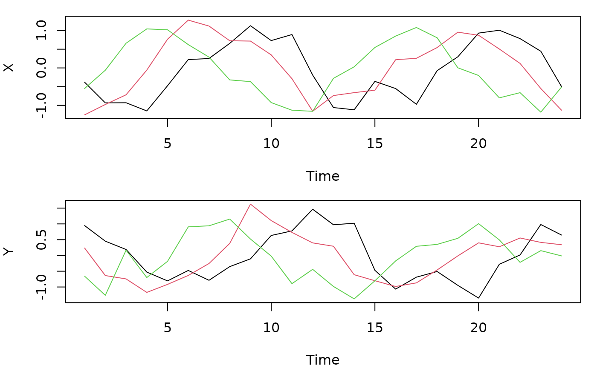

simulate_lagged_series() generates pairs of multivariate
series with a known temporal relationship. It is meant for checking how
lagged_protest() behaves in a design like yours before
analyzing real data: how often it finds concordance between independent
series (Type I error), and how often it detects and locates a true lag
(power). This article explains what the function generates and shows a
small calibration study.
What the function generates
Each variable of X is a seasonal signal with period
period and amplitude amplitude, plus AR(1)
noise with coefficient autocorr and marginal standard
deviation noise_sd. By default
(waveform = "circle"), every variable is a sine wave; all
share a random phase, offset among variables by evenly spaced steps so
that they do not peak at the same time. This default is a special case,
discussed in Seasonal waveforms below:
the seasonal part of the series traces a circle.
Y depends on true_lag:
-
true_lag = NULL:Yis an independent draw from the same generator, with its own random phase. This is the null hypothesis. -
true_lag = k:Yat time t is a linear map ofXat time t − k plus independent AR(1) noise. The map is the identity whenXandYhave the same number of variables and a random matrix otherwise.true_lag = 0is a contemporaneous association, not the absence of one.
sim <- simulate_lagged_series(n_times = 24, n_vars_x = 3, n_vars_y = 3,
true_lag = 3, period = 12, autocorr = 0.3,
noise_sd = 0.3, seed = 1)
op <- par(mfrow = c(2, 1), mar = c(4, 4, 1, 1))
matplot(sim$X, type = "l", lty = 1, xlab = "Time", ylab = "X")
matplot(sim$Y, type = "l", lty = 1, xlab = "Time", ylab = "Y")
par(op)Y repeats the seasonal pattern of X three
time steps later. The scan recovers the lag:
fit <- lagged_protest(sim$X, sim$Y, lags = 0:6, nperm = 999, seed = 1)
fit$optimal_lag
#> [1] 3
fit$p.global
#> [1] 0.007Choosing the parameters
The parameters map onto features of a real design:
-
n_times: the number of time points you have, for example 12 monthly centroids. -
n_vars_x,n_vars_y: the number of variables (or ordination axes) in each data set. More variables make concordance between independent series more likely by chance, which the permutation null accounts for. -
period: the length of the seasonal cycle in time steps. Settingperiod = n_timesgives one complete cycle;period = 12with 24 or more monthly samples gives several complete cycles; a period that does not dividen_timesgives an incomplete cycle, a case in which the test is not calibrated (see Choosing a permutation scheme). -
amplitude: the strength of the seasonal signal.amplitude = 0removes it and leaves pure AR(1) series. -
waveform,spread,amp_sd_varsandamp_sd_cycles: the shape of the seasonal signal, how far apart in phase the variables are, and how much the seasonal amplitude varies among variables and from one cycle to the next (see Seasonal waveforms). -
autocorrandnoise_sd: the persistence and size of the non-seasonal variation.noise_sdapplies both toXand to the noise added toY. BecauseYis a lagged copy ofX, including the noise ofX, a largernoise_sdweakens the lagged signal less than one might expect; series length has a much stronger effect on power.
A practical way of setting them is to match your data: use your
series length and number of variables, estimate the seasonal amplitude
and the residual variation from the data, and vary autocorr
over a plausible range.
A small calibration study
The function below simulates n_rep pairs, runs
lagged_protest() on each, and returns the proportion of
replicates in which the global p-value was below α, together with the
proportion in which the optimal lag matched the true one. Each replicate
gets its own seed, so the study is reproducible. The optional
prep function is applied to both series before the test.
The scan uses stat = "z": with only 99 surrogates per
replicate, the default stat = "minP" is conservative,
because it needs at least 100 surrogates per lag scanned.
calibrate <- function(n_rep, true_lag = NULL, n_times = 24, lags = 0:4,
nperm = 99, alpha = 0.05, prep = identity, ...) {
res <- vapply(seq_len(n_rep), function(i) {
s <- simulate_lagged_series(n_times = n_times, true_lag = true_lag,
seed = i, ...)
f <- lagged_protest(prep(s$X), prep(s$Y), lags = lags, nperm = nperm,
stat = "z", seed = i)
c(reject = f$p.global < alpha,
lag_found = if (is.null(true_lag)) NA else f$optimal_lag == true_lag)
}, numeric(2))
rowMeans(res)
}Here we use 24 monthly samples spanning two annual cycles, five variables, moderate autocorrelation and lags 0–4. With 100 replicates the estimates are rough (a rate of 0.05 has a 95% interval of about 0.02–0.11); a real study should use 1000 or more replicates and 999 surrogates.
rbind(
type_I_n24 = calibrate(100, true_lag = NULL, period = 12, autocorr = 0.5,
noise_sd = 0.5),
power_n24 = calibrate(100, true_lag = 2, period = 12, autocorr = 0.5,
noise_sd = 0.5),
power_n12 = calibrate(100, true_lag = 2, n_times = 12, lags = 0:3,
period = 12, autocorr = 0.5, noise_sd = 2)
)
#> reject lag_found
#> type_I_n24 0.05 NA
#> power_n24 1.00 1.00
#> power_n12 0.56 0.94The first row should be close to 0.05. The second shows that two years of monthly data detect a two-month lag almost always. The third, with a single year of noisier data, shows that the global p-value detects the lag far less often even when the optimal lag is still usually the true one: the lag is easier to locate than to declare significant.
Seasonal waveforms
With the default waveform = "circle", the seasonal part
of each series spans a plane with evenly spaced phase offsets among its
variables, so its configuration is a circle and a shift in time is an
exact rotation of that circle. Procrustes analysis removes rotations, so
a time shift of the seasonal cycle alone leaves the configuration
unchanged. Phase surrogates of such a series are calibrated, but the
generator is a best case and rarely describes real data, whose variables
need not peak at evenly spaced times nor follow a sine wave.
The other waveforms break this symmetry. Each variable follows the
same periodic function, "sine", "harmonics" (a
sine with its second and third harmonics), "sawtooth" (a
slow rise and an abrupt drop) or "pulse" (a short peak once
per cycle), shifted by an offset around a common phase set by
spread. All are scaled to the variance of a sine wave of
the same amplitude. Amplitudes can vary among variables and among cycles
with amp_sd_vars and amp_sd_cycles.
op <- par(mfrow = c(2, 2), mar = c(4, 4, 2, 1))
for (w in c("circle", "harmonics", "sawtooth", "pulse")) {
s <- simulate_lagged_series(n_times = 36, waveform = w, noise_sd = 0.1,
amp_sd_cycles = 0.2, seed = 1)
plot(s$X[, 1], type = "l", main = w, xlab = "Time", ylab = "X[, 1]")
}
par(op)The waveform matters for the phase scheme. A phase surrogate keeps the amplitude of every frequency but draws new phases, and an abrupt cycle is abrupt only because the phases of its harmonics are aligned. Two independent series with the same sawtooth cycle are therefore more concordant with each other than either is with the surrogates of the other, and the test rejects too often. Removing the mean of each position in the cycle (here, each calendar month) from both series before the test removes the shared shape and restores calibration, provided the series span several whole cycles:
deseason <- function(M, period = 12) {
M - apply(M, 2, stats::ave, (seq_len(nrow(M)) - 1) %% period)
}
rbind(
sawtooth = calibrate(100, n_times = 48, period = 12,
waveform = "sawtooth", noise_sd = 0.5),
sawtooth_deseasoned = calibrate(100, n_times = 48, period = 12,
waveform = "sawtooth", noise_sd = 0.5,
prep = deseason)
)[, "reject"]
#> sawtooth sawtooth_deseasoned
#> 0.41 0.03In a larger run with the default stat = "minP" (400
replicates, 199 surrogates, autocorr = 0.5,
noise_sd = 0.5, lags 0–4), the Type I error of the phase
scheme was 0.26 with 24 monthly samples and 0.34 with 48 for a shared
sawtooth, 0.10 and 0.18 for a shared pulse, and 0.03 to 0.05 for the
circle, sine and harmonics waveforms; after removing the monthly means
it was 0.01 to 0.04 for every waveform. With a single cycle
(n_times equal to period), the monthly means
are the series itself, so this remedy is not available.
Extending the study
The same function covers other questions by changing its arguments:
- compare schemes by adding
permutation = "cyclic"to the call oflagged_protest(); - test the effect of an incomplete seasonal cycle with, for example,
n_times = 24, period = 18; - check robustness to non-seasonal series with
amplitude = 0; - check robustness to the shape of the seasonal cycle with
waveformandspread; - use data sets of different dimension with
n_vars_xdifferent fromn_vars_y.
For larger studies, run the replicates in parallel (for example with
parallel::mclapply() or the future framework);
because each replicate has its own seed, results do not depend on how
the work is split.